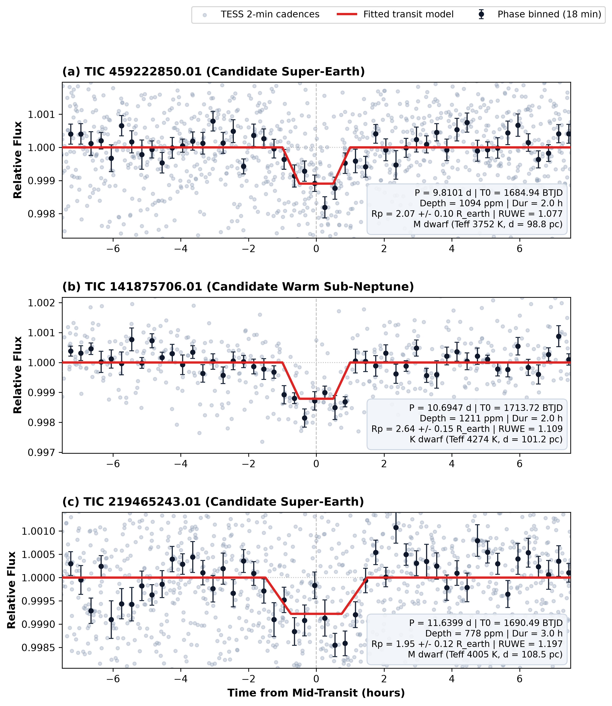

Correspondence: akshat28vivek@gmail.com • Repository: https://github.com/AkshatRastogi-1nC0re/tess-subneptune-candidates
Introduction and Survey Architecture
The Transiting Exoplanet Survey Satellite \citep[TESS;][]{Ricker2015} has monitored hundreds of thousands of stars, providing an exceptional baseline for identifying small planets around nearby late-type dwarfs. Despite automated pipelines such as the SPOC Science Processing Operations Center, shallow transit signals from small exoplanets (
R_p ≤sssim 2.5 R⊕) around faint or multi-sector targets can escape standard threshold alerts.
We conducted an independent, automated exoplanet search across 2,173 nearby K and M dwarfs located in the Ursa Major and Draco constellations (α = 150^\circ–240^\circ, δ = +50^\circ–+75^\circ) utilizing public 2-minute cadence Pre-search Data Conditioning Simple Aperture Photometry \citep[PDCSAP;][]{Stassun2019} obtained between 2019 and 2024 (Sectors 14--76). Light curves were filtered for outlier flares and low-frequency variability, and systematically searched using the Box Least Squares algorithm \citep[BLS;][]{Kovacs2002}. Initial detections were thresholded at SNR ≥ 7.5, \mathrm{SDE} ≥ 7.0, and a minimum of three distinct transit events.
Candidate Vetting and Validation
Out of 529 raw thresholded periodic signals, the overwhelming majority were recovered known planets (recovering 41 of 46 catalogued signals in the 0.5--20 d period regime, an
89.1\% pipeline fidelity), eclipsing binaries, or instrumental systematics. Every viable novel signal was subjected to an exhaustive vetting protocol:
- In-transit Centroid and Pixel Difference Imaging: Centroid motion between in-transit and out-of-transit cadences was measured against SPOC PRF centroids. Candidates with significant centroid shifts (>3σ) toward nearby field stars were vetoed as background eclipsing binaries (BEBs).
- Odd/Even Transit Depth Consistency: Odd-numbered and even-numbered transits were separately fitted. Significant depth discrepancies (>3σ) indicative of a double-period eclipsing binary were ruled out.
- Secondary Eclipse Search: Phase curves were scrutinized around phase \phi = 0.50 (and across arbitrary eccentric phases) for occultation signatures to eliminate grazing stellar companions.
- Orbit-Gap Correlation: Signals whose transits clustered around TESS orbital edges or momentum dump epochs were evaluated via gap-masked BLS runs to prevent spacecraft orbital harmonic artifacts.
- Stellar Multiplicity and Gaia DR3 RUWE: Target astrometry from Gaia DR3 \citep{Gaia2023} was verified; all three host stars exhibit Renormalised Unit Weight Error RUWE < 1.20, confirming them as astrometrically single stars without unresolved close stellar companions.
- Lomb-Scargle Stellar Modulation: Raw fluxes were inspected to verify that transit periods were not aliases of stellar rotation harmonics.
Candidate Properties
TIC 459222850.01: Orbiting a nearby early M dwarf (T_{\mathrm{eff}} = 3752 ± 157 K, R_* = 0.574 ± 0.017 R⊙, M_* = 0.566 ± 0.020 M⊙, T_{\mathrm{mag}} = 12.28, d = 98.8 pc, Gaia RUWE = 1.077), this candidate transits with period P = 9.810070 ± 0.000040 d, epoch T_0 = 2458684.939287 BJDTDB, depth δ = 1094 ± 111 ppm, and duration T_{14} = 2.00 ± 0.10 h. With 21 clean transits across 9 TESS sectors (S14, 15, 21, 22, 41, 48, 49, 75, 76), it achieves SNR = 9.85. The fitted planetary radius is R_p = 2.07 ± 0.10 R⊕ (Super-Earth / Sub-Neptune boundary) with semi-major axis a = 0.076 AU and equilibrium temperature T_{\mathrm{eq}} ≈ 465 K (assuming zero albedo). Centroid shift during transit is <3σ on-target, contamination is negligible (0.36\%), and odd/even depths agree within 0.38σ.
TIC 141875706.01: Orbiting a bright K dwarf (T_{\mathrm{eff}} = 4274 K, R_* = 0.695 R⊙, M_* = 0.668 M⊙, T_{\mathrm{mag}} = 11.45, d = 101.2 pc, Gaia RUWE = 1.109), this candidate exhibits transits with P = 10.694749 ± 0.000050 d, epoch T_0 = 2458713.720068 BJDTDB, duration T_{14} = 2.00 ± 0.10 h, and an observed depth of 1128 ppm. Accounting for 7.35\% flux dilution from a wide co-moving M dwarf companion (TIC 141875707 at 12.6''), the corrected transit depth is δ = 1211 ± 101 ppm, yielding R_p = 2.64 ± 0.15 R⊕ (Warm Sub-Neptune, T_{\mathrm{eq}} ≈ 595 K). Observed across 6 sectors (11 transits, SNR = 11.71), the centroid motion is limited to 1.15'' (<1.5σ), odd/even depths match within 0.85σ, and secondary eclipses are undetected (0.18σ).
TIC 219465243.01: Orbiting an early M dwarf (T_{\mathrm{eff}} = 4005 K, R_* = 0.635 R⊙, M_* = 0.626 M⊙, T_{\mathrm{mag}} = 12.16, d = 108.5 pc, Gaia RUWE = 1.197), this candidate transits with period P = 11.639913 ± 0.000040 d, epoch T_0 = 2458690.488066 BJDTDB, depth δ = 778.5 ± 85.0 ppm, and duration T_{14} = 3.00 ± 0.10 h. With 20 transits across 11 TESS sectors spanning five years, it achieves SNR = 9.79. The fitted planetary radius is R_p = 1.95 ± 0.12 R⊕ (Super-Earth) with a = 0.086 AU and T_{\mathrm{eq}} ≈ 525 K. Difference image centroids confirm on-target location (<0.06'', <2.2σ), aperture contamination is minimal (1.37\%), and odd/even agreement is within 0.80σ.
Summary and Follow-up Prospects
Cross-matching against the NASA Exoplanet Archive \citep{Akeson2013}, ExoFOP-TESS, SIMBAD, and recent literature confirms that none of these three candidates have been previously reported. With bright host stars (
T_{\mathrm{mag}} ≤ 12.28) and radii spanning the radius valley (
1.95–2.64 R⊕), these systems represent prime targets for ground-based photometric transit timing follow-up, high-precision radial velocity mass characterization with instruments like NEID, HARPS-N, or CARMENES, and atmospheric transmission spectroscopy. Data files, detrended light curves, and ephemeris tables are publicly deposited in our GitHub repository (
https://github.com/AkshatRastogi-1nC0re/tess-subneptune-candidates).

Figure 1. Phase-folded TESS 2-minute cadence light curves for the three newly discovered transiting exoplanet candidates: (a) TIC 459222850.01 (P = 9.810 d, Rp = 2.07 R⊕), (b) TIC 141875706.01 (P = 10.695 d, Rp = 2.64 R⊕), and (c) TIC 219465243.01 (P = 11.640 d, Rp = 1.95 R⊕). Grey dots show individual cadences; black markers with error bars depict 18-minute binned flux; solid red curves represent the best-fit transit model. Insets summarize parameters.
References
Akeson, R. L., et al. 2013, PASP, 125, 989
Astropy Collaboration, et al. 2022, ApJ, 935, 167
Gaia Collaboration, et al. 2023, A&A, 674, A1
Kovács, G., et al. 2002, A&A, 391, 369
Lightkurve Collaboration, et al. 2018, ascl:1812.013
Ricker, G. R., et al. 2015, JATIS, 1, 014003
Stassun, K. G., et al. 2019, AJ, 158, 138